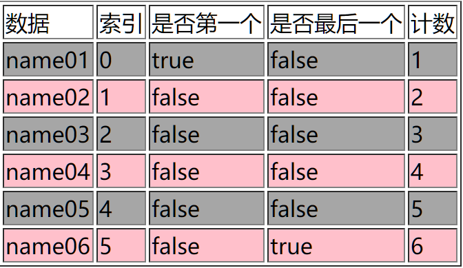

JSP概述
Java Servler Pages，sun公司定义的一种用于开发动态web资源的技术。JSP实际上就是Servlet。
JSP最大的特点在于可以在html中嵌套java代码，为用户提供动态数据。
举例：在jsp页面中输出当前时间。
1
2
3
4
5
6
7
8
9
10
11
12
13
14
15
16
17<% import="java.util.Date"%>
<%@ page language="java" contentType="text/html; charset=UTF-8"
pageEncoding="UTF-8"%>
<!DOCTYPE html>
<html>
<head>
<meta charset="UTF-8">
<title>CurrentTime</title>
</head>
<body>
<%
//输出当前日期
Date date = new Date();
out.write(date.toString());
%>
</body>
</html>在旧的eclipse中使用jsp，需要导入tomcat中的jsp.jar和servlet-api.jar两个包。
在访问jsp页面时，会先将其编译成jsp.java，再编译成jsp.class。
eclipse创建jsp文件默认编码格式为ISO-8859-1，在Window->Preferences->web->JSP Files中找到Encoding，换成UTF-8，搞定。
JSP之间提交数据的例子：
login.jsp
1 | <%@ page language="java" contentType="text/html; charset=UTF-8" |
handlelogin.jsp
1 | <%@ page language="java" contentType="text/html; charset=UTF-8" |
结果：在第一个页面提交的数据会出现在第二个页面上。
- 一般由servlet处理提交的数据而不用jsp。
- request,response,out都是jsp的内置对象，不需要创建直接可以使用。
JSP的基本使用
JSP模板元素
网页静态元素：html标签和文本
JSP的脚本
小脚本：<% java代码 %>
表达式：<%= 2+3%>等价于out.print(2+3);
声明：<%! %>表示在类中定义全局成员，静态块
JSP注释
JSP注释：<%-- --%>安全、省流量。
网页注释：<!-- -->不安全、费流量。
JSP指令
JSP指令（directive）是为JSP引擎而设计的，他们并不直接产出任何可见输出，而知识告诉引擎如何处理JSP页面中的其余部分。
在JSP2.0规范中共定义了三个指令：page、include、taglib。
如JSP的默认第一行：
<%@ page language="java" contentType="text/html; charset=UTF-8" pageEncoding="UTF-8"%>
page
import：与java的import一样，用于导入包。
errprPage：如果页面中有错误，则跳转到指定的资源。
- 路径如果不写”/“则是相对路径，写”/“则从WebContent开始的绝对路径。
contextType：告诉浏览器后面内容的格式，等同于response.setContextType("text/html;charset=utf-8");
pageEncoding：告诉JSP引擎编译这个文件使用的编码。
isELIgnored：是否支持EL表达式，默认false。
include
把其他资源包含到当前页面中。
静态包含：在编译时就把两个文件合并。编译完只有一个文件。
<%@ include file="include/header.jsp"%>
动态包含：不会合并文件，当代码执行到include时，才会包含另一个文件的内容。编译完有两个文件。
<jsp:include page="/include/header.jsp"></jsp:include>
- 能用静态包含就不要用动态包含。
taglib
在JSP页面中导入标签库，代替jsp中的Java代码片段。
JSP的常用动作
<jsp:include>：动态包含另一个jsp内容进入当前的jsp页面。
<jsp:forward page="">：请求转发。
<jsp:param>：设置请求参数。可以由请求转发标签包裹。
<jsp:useBean id="book[对象名]" class="类">：创建一个对象。
<jsp:setProperty name="book[对象名]" property="bookname[成员变量名]" value="葵花宝典[bookname成员变量的值]">：给指定的对象属性赋值。
<jsp:getProperty name="book[对象名]" property="bookname[成员变量名]">：取出指定对象的属性值
JSP的内置对象
内置对象是不用new可以直接使用的对象。
pageContext
pageContext本身是一个域对象，它可以操作其他三个域对象[request,session,application]的数据。
数据的存储方式：存在域对象中
- ServletContext[application]：范围最大，在整个应用中是共享的。其中存的值所有servlet都可以拿到。
- Session：同一个会话中有效。同一个浏览器同一个session。一次会话。
- request：在同一个请求对象中有效。在request中设置的变量通过转发才可以让另外一个servlet取到值。一次请求。
常用方法：
- void setAttribute(String name,Object o);
- Object getAttribute(String name);
- void removeAttribute(String name);
操作其他域对象的方法：
- void setAttribute(String name, Object o, int Scope);
- Object getAttribute（String name, int Scope);
- void removeAttribute(String, int Scope);
scope的值：
- PageContext.PAGE_SCOPE（作用域是当前页面）
- PageContext.REQUEST_SCOPE
- PageContext.SESSION_SCOPE
- PageContext.APPLICATION_SCOPE
findAttribute(String name)
自动从page request session application中依次查找，找到了就取值，结束查找。
通过pageContext获取其他8个对象
pageContext.getPage();等价于直接用page。
pageContext的简易方法
pageContext.forward(“2.jsp”);
pageContext.include(“2.jsp”);
JS的EL表达式
Expression language，表达式语言，用于简化jsp中java代码的开发。它不是一种语言，是jsp中获取数据的一种规范。
EL的具体功能
获取数据
EL只能获取4个作用域中的数据。
${x}用于简化pageContext.findAttribute(“x”);
1
2
3
4
5
6
7
8<%
User user = new User("name01", "20", "male");
request.setAttribute("user",user);
%>
${user.name}<br>
${user.age}<br>
${user.gender}<br>user.name实际上是调用user对象的getUsername方法。
显示结果：
name01
20
male
EL的使用方法：
${作用域key.属性名}EL获取对于向null这样的数据，在页面中表现为空字符串。
集合数据获取：通过下表或key获取。
1
2
3
4
5
6
7
8
9
10
11
12
13
14
15
16
17
18
19
20<%
List<String> list = new ArrayList<String>();
list.add("str1");
list.add("str2");
list.add("str3");
Map<String,String> company = new HashMap<String,String>();
company.put("name","东亚重工");
company.put("address","asia");
request.setAttribute("list", list);
request.setAttribute("company", company);
%>
${list[0]}<br>
${list[1]}<br>
${list[2]}<br>
${company['name']}<br>
${company['address']}<br>显示结果
- 拿map的属性使用中括号。
属性导航
1 | <% |
user类中一个address类的成员变量，address中有country和province两个属性。EL可以属性导航取到country或province。
显示结果：
中国
河北
空运算empty
用于判断null，空字符串和没有元素的集合（即使集合对象本身不为null）都返回ture。
1 | <% |
显示结果：
true
false
true
false
三元运算符
1 | <% |
EL的隐式对象
pageContext 和jsp的pageContext一样
pageScope 页面范围数据
requestScope 请求范围数据
sessionScope 会话范围数据
applicationScope 应用范围数据
param 一个请求参数
paramValues 重名请求参数
header 一个请求消息头
headerValues 重名请求消息头
initParam web.xml中全局参数
cookie key是cookie对象的name值
- 除了pageContext之外的隐式对象都是map类型的。
- EL表达式获取各个域中的数据。
1 | <% |
显示结果：
page
request
session
application
获取上下文路径名（项目名）：
${pageContext.request.getContextPath}可以灵活设置servlet的访问路径。
通过EL表达式获取请求参数：
${param['username']}${param['password']}username和password通过参数传进来，这两个表达式返回key对应的value。
通过EL表达式获取请求头数据：
${header['Accept']}可以拿到请求头里Accept的value。通过EL表达式获取cookie数据：
${cookie['JSESSIONID']}可以拿到cookie对象。${cookie['JSESSIONID'].value}可以拿到cookie对象中JSESSIONID的value。
JSTL
JavaServerPage Standard Tag Library：jsp标准标签库。使用JSTL可以实现jsp页面中的逻辑处理。如判断、循环等。
在导入JSTL的jar包后，在顶部添加jsp指令：
<%@ taglib uri="http://java.sun.com/jsp/jstl/core" prefix="c" %>
通用标签：set、out、remove
1 | <!-- 存一个变量值 --> |
条件标签：if、choose
1 | <c:set var="a" value="3"></c:set> |
迭代标签：forEach
1 | <!-- c:foreach 普通遍历 --> |
迭代器：
- c:forEach中的varStatus属性。
- 指向一个字符串，该字符串引用一个对象。
- 这个对象记录着当前遍历元素的一些信息：
- getIndex()：返回索引。从0开始。${vs.index}
- getCount()：返回计数。从1开始。${vs.count}
- isLast()：是否是最后一个元素。${vs.last}
- isFirst()：是否是第一个元素。${vs.first}
例子：一个chart
1 | <% import="java.util.ArrayList"%> |
效果：
- jsp在编写时省了不少力气，但它在编译后是不存在jsp语句的。如果在浏览器上查看源代码，会发现被jsp省略的东西（如循环）会一遍一遍的显示在上面。